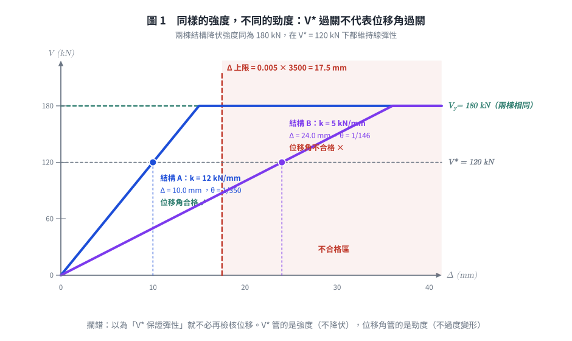
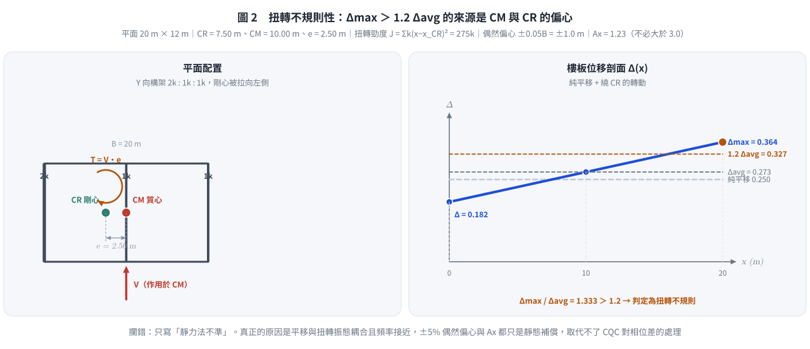

考題編號：SD-2012-3
主分類： SD-U2-2 建築耐震設計規範
副分類： SD-U2-1 地震力之設計規範
分析方法： 概念題（規範論述）
標籤： 層間相對側向位移角 0.005 中小度地震 V* 強度與勁度 非結構構件 P-Δ效應 鄰棟碰撞 扭轉不規則性 質量中心 剛心 偶然偏心 扭矩放大係數Ax 靜力分析缺點 動力分析必要性 平移扭轉耦合
1. 原始題目重述 (Problem Restatement)
本題為純文字概念題，無附圖。
題幹： 請回答下列有關耐震設計規範中的相關問題：
(一)（10 分） 若結構依「避免中小度地震降伏之設計地震力 $V^*$」設計時，依規範原意，結構於中小度地震作用下應可維持在線彈性狀態，但何以規範規定需再作「層間相對側向位移角之檢核」？請說明之。
(二)（10 分） 何謂扭轉不規則性結構？若以靜力分析來進行其耐震設計時，可能會有那些缺點？
題目背景補充（作答時用得到）：
$$V^* = \frac{I\,F_u}{4.2\,\alpha_y}\left(\frac{S_{aD}}{F_u}\right)_m W \quad\text{（一般工址；臺北盆地為 } 3.5\alpha_y\text{）}$$
中小度地震為回歸期約 30 年（50 年超越機率約 80%）之地震，規範對此水準的性能要求是 「結構體保持在彈性限度內」，即三水準耐震設計中的小震不壞。 $V^$ 式中 $F_u$ 在分子分母相消，代表中小度地震不容許動用韌性折減*。
2. 考題核心精神與出題者意圖 (Core Concepts & Examiner's Intent)
核心觀念：
- 強度檢核與勁度檢核是兩回事。 $V^*$ 是強度規定（保證不降伏），層間位移角是勁度規定（保證不過度變形）。滿足其一不蘊含滿足另一。
- 扭轉不規則的本質是平移–扭轉耦合的動力行為，而靜力法只能以「一組固定的側力＋一個固定的偶然偏心」去近似它。
出題者意圖：
- 子題(一)刻意設下一個看似矛盾的前提（「都已經彈性了，還檢核什麼？」），測驗考生是否理解耐震設計除了生命安全還有使用性（serviceability） 與穩定性（P-Δ） 兩條獨立戰線。
- 子題(二)測驗能否從「振態耦合」的角度說明靜力法失效，而不是只答「靜力法比較不準」。
兩題共同的深層考點： 規範的每一條檢核都對應一個它自己無法涵蓋的失效模式。
3. 解題戰略地圖與陷阱分析 (Strategic Roadmap & Trap Analysis)
作戰計畫：
子題(一)
Step 1 先破題：V* 管「強度」，位移角管「勁度」，兩者獨立
Step 2 再分層舉出位移過大的三類後果：
非結構構件損壞（使用性）→ P-Δ（穩定性）→ 鄰棟碰撞（相鄰安全）
Step 3 補一刀：週期以經驗公式估算本有誤差，位移須另行直接檢核
Step 4 收尾給規範數值：0.005
子題(二)
Step 1 定義：Δmax > 1.2 Δavg（剛性樓板、同層兩端）
Step 2 成因：CM 與 CR 偏心
Step 3 靜力法四項缺點（耦合振態／偶然偏心不足／相位／遠端構件低估）
Step 4 收尾：故規範要求做三維動力分析
關鍵陷阱：
| # | 陷阱 | 正確處理 |
|---|---|---|
| ★★★ | 子題(一)答成「因為分析有近似，所以要驗算」 | 太模糊。必須點出強度 ≠ 勁度這個本質，再展開三類後果 |
| ★★★ | 把位移角限值背成 $1/400$ 或「設計地震下 0.01」 | 我國規範 2.16.1 明定不得超過 0.005（＝ $1/200$），且檢核的是中小度地震下的層間位移角 |
| ★★ | 子題(二)只寫「靜力法不準」而不說明為何對扭轉不規則特別不準 | 要扣住「靜力法無法表現平移振態與扭轉振態的相位差」 |
| ★★ | 混淆「扭轉不規則」與其他平面不規則（凹角、樓板開孔、非平行系統） | 扭轉不規則有明確的 1.2 倍量化門檻，其餘各有各的定義 |
| ★ | 把偶然偏心 $\pm 5\%$ 誤記為 $\pm 10\%$ 或誤以為只需單側 | 規範：質心向左及向右各偏移垂直於地震力方向尺度的 5%，兩側都要算 |
3.5 變數層次分析 (Variable Hierarchy Analysis)
複習提示：第一次解題後，在每個卡住的知識點旁標記
⚠；第二次複習時只看有⚠的項目。
最終目標
說明 (一) 為何「已保證彈性」仍須檢核層間位移角；(二) 扭轉不規則性的定義與靜力分析的缺點。
本題關鍵公式（依論述順序）
$$\theta_i = \frac{\Delta_i}{h_i} \le 0.005 \quad\text{（規範 2.16.1，中小度地震下之層間相對側向位移角）}$$
$$\Delta_{max} > 1.2\,\Delta_{avg} = 1.2 \times \frac{\Delta_A + \Delta_B}{2} \quad\text{（扭轉不規則性判準）}$$
$$e = x_{CM} - x_{CR} \quad\text{（靜態偏心距）}\qquad e_a = \pm 0.05\,L \quad\text{（偶然偏心）}$$
$$A_x = \left(\frac{\delta_{max}}{1.2\,\delta_{avg}}\right)^2 \le 3.0 \quad\text{（扭矩放大係數，扭轉不規則時放大意外扭矩）}$$
$$\theta_{P\text{-}\Delta} = \frac{P_x \Delta}{V_x h_{sx}} \quad\text{（穩定係數，量化二階效應嚴重程度）}$$
L1：題目直接給定
| 概念 | 內容 |
|---|---|
| 設計前提 | 結構依 $V^*$ 設計，於中小度地震下應維持線彈性 |
| 待答一 | 為何仍需檢核層間相對側向位移角 |
| 待答二 | 扭轉不規則性之定義；靜力分析之缺點 |
L2：需知識點推導
① 位移角檢核的四個理由
| 理由 | 公式／來源 | 卡關? |
|---|---|---|
| 強度 ≠ 勁度 | $V^*$ 保證 $V \le V_y$；位移由 $\Delta = V/k$ 決定，$k$ 不足時 $\Delta$ 仍可過大 | |
| 非結構構件保護 | 隔間牆、帷幕、管線的容許變形遠小於結構構件 | |
| P-Δ 二階效應 | $\theta_{P\text{-}\Delta} = P_x\Delta/(V_x h_{sx})$，過大則側向失穩 | |
| 鄰棟碰撞 | 位移須小於與鄰棟之分隔距離 | |
| 規範限值 | 規範 2.16.1：$\Delta/h \le 0.005$ |
② 扭轉不規則的量化與處理
| 符號 | 公式／來源 | 卡關? |
|---|---|---|
| $\Delta_{avg}$ | $(\Delta_A+\Delta_B)/2$，同層兩最外端之平均 | |
| 判準 | $\Delta_{max} > 1.2\Delta_{avg}$ | |
| $e$ | $x_{CM}-x_{CR}$，質心與剛心偏心距 | |
| $e_a$ | $\pm 0.05L$（$L$ 為垂直於地震力方向之樓面尺度） | |
| $A_x$ | $(\delta_{max}/1.2\delta_{avg})^2 \le 3.0$ |
L3：深層知識（不懂就卡住）
| 知識點 | 說明 | 卡關? |
|---|---|---|
| 強度與勁度的獨立性 | $V_y = $ 強度、$k = $ 勁度。$\Delta = V^*/k$：兩棟強度相同的結構，勁度差一倍，位移就差一倍 | |
| 中小度地震的性能定位 | 回歸期約 30 年，建築物一生會遇到；此水準要求「不壞且可繼續使用」，故使用性（位移）比強度更關鍵 | |
| 週期估算誤差的方向 | 經驗式 $T_a$ 偏小 → $S_{aD}$ 偏大 → $V^$ 偏保守（強度夠），但真實位移仍由真實週期決定*，強度保守不代表位移保守 | |
| 平移–扭轉耦合 | CM 與 CR 不重合時，$[K]$ 的平移與轉動自由度耦合，振態本身就是「平移＋扭轉」的混合體，無法拆開處理 | |
| 相位差（本題最深的一點） | 平移振態與扭轉振態的最大值不同時發生；SRSS／CQC 以機率方式處理，靜力法只能代數相加或忽略，兩種做法都不對 |
4. 步驟化詳細計算過程 (Step-by-Step Detailed Calculation)
本題為概念論述題，以文字與公式對照取代數值計算。
(一) 中小度地震下維持線彈性，為何仍需檢核層間相對側向位移角（10 分）
破題：$V^*$ 管「強度」，位移角管「勁度」
$$V^\ \text{保證}\ V \le V_y\ \text{（不降伏）} \qquad\text{但}\qquad \Delta = \frac{V^}{k}\ \text{的大小由}\ k\ \text{決定}$$
依 $V^$ 設計，只保證構材的內力不超過降伏強度；至於結構被推多遠，取決於側向勁度* $k$。 兩棟強度相同但勁度差一倍的結構，在同一地震下的層間位移差一倍，而兩者都「維持線彈性」。
$$\boxed{\text{強度與勁度是兩個獨立的工程指標，滿足其一不蘊含滿足其二}}$$
這就是為什麼規範在強度規定（$V^*$）之外，還要獨立訂一條位移規定。以下四個理由說明「彈性但變形過大」為何仍不可接受。
理由一：非結構構件的保護與使用性（最常考）
規範所謂「維持線彈性」指的是結構構件（梁、柱、牆）不降伏；但建築物的價值與功能大量寄託在非結構系統上，而它們對變形而非對「力」敏感：
| 非結構系統 | 過大層間位移的後果 |
|---|---|
| 輕隔間、磚牆 | 斜向裂縫、粉刷剝落 |
| 玻璃帷幕牆 | 玻璃破裂墜落（人員傷亡風險） |
| 天花板、燈具 | 掉落 |
| 管線、電梯導軌 | 接頭破壞、電梯無法運轉 → 建築功能中斷 |
中小度地震在建築 50 年壽命中大概會遇到一兩次（回歸期約 30 年）， 規範對此水準的期待是「震後可立即繼續使用」。 若每次中小地震都造成隔間開裂、帷幕破損，即使結構完好，社會成本仍不可接受。
理由二：P-Δ（幾何非線性、二階）效應
層間位移過大時，重力 $P$ 作用在已側移 $\Delta$ 的結構上，產生附加傾覆彎矩：
$$M_{2nd} = P\cdot\Delta \qquad\Longrightarrow\qquad \theta_{P\text{-}\Delta} = \frac{P_x\,\Delta}{V_x\,h_{sx}}$$
- 材料雖仍彈性，但幾何已非線性：實際需求大於一階線性分析的預測
- $\theta$ 過大時，結構的有效側向勁度被重力「吃掉」，極端情況導致側向失穩（重力倒塌）
- 限制 $\Delta/h$ 等於間接把 $\theta_{P\text{-}\Delta}$ 壓在可接受範圍內
理由三：鄰棟碰撞（Pounding）
台灣市區建築多為連棟或緊鄰。層間位移角管制使結構的側向變形不超過與鄰棟的分隔距離， 避免中小地震時樓板撞擊鄰棟樓層（樓板撞柱身是最危險的型式，可能造成柱剪力破壞）。 這是純粹的變形問題，強度檢核完全管不到。
理由四：$V^*$ 本身的估算誤差不會傳遞成位移的保守
- $V^*$ 以等效靜力法計算，基本週期常以經驗公式 $T_a$ 估算
- 經驗式一般給出偏小的 $T$ → $S_{aD}$ 偏大 → $V^$ 偏大 → 強度設計偏保守*
- 但結構的真實振動位移是由真實週期與真實勁度決定的，並不會因為 $V^*$ 取得保守而變小
$$\text{強度保守} \nRightarrow \text{位移保守}$$
因此規範要求以位移直接檢核，補上等效靜力法在「變形預測」上的不足。
規範限值
$$\boxed{\theta = \frac{\Delta}{h} \le 0.005 \quad (=1/200)}$$
依《建築物耐震設計規範及解說》2.16.1：每一樓層與其上、下鄰層之相對側向位移除以層高，其值不得超過 0.005。

圖 1 兩棟降伏強度完全相同的結構，只因勁度差 2.4 倍，一棟位移角合格、一棟不合格。它攔的是本子題的核心誤解：以為「$V^$ 保證彈性」就不必再檢核位移——$V^$ 管強度，位移角管勁度。
結論（作答要點）
層間位移角檢核的目的不在確認「強度」，而在確認「勁度」。$V^$ 只保證中小度地震下構材不降伏， 但一個彈性卻柔軟的結構仍可能：(1) 損壞非結構構件、中斷使用機能；(2) 因 P-Δ 效應放大需求乃至側向失穩； (3) 與鄰棟碰撞。且 $V^$ 取得保守並不會使位移變小。 故規範以 $\Delta/h \le 0.005$ 作為與強度規定並列、且獨立的第二道檢核——強度確保不降伏，勁度確保不過度變形，兩者缺一不可。
(二) 扭轉不規則性結構之定義與靜力分析之缺點（10 分）
定義
扭轉不規則性（Torsional Irregularity）： 樓板具剛性隔板時，在考慮方向施加側力（含偶然偏心）後， 同一樓層兩端之最大層間側向位移超過該層兩端平均層間側向位移的 1.2 倍：
$$\boxed{\Delta_{max} > 1.2\,\Delta_{avg} = 1.2 \times \frac{\Delta_A + \Delta_B}{2}}$$
（$A$、$B$ 為該樓層在垂直於受力方向上的兩個最外端點。ASCE 7 另訂 1.4 倍為「極端扭轉不規則」。）
成因
- 質量中心 CM 與剛心 CR 之偏心距 $e = x_{CM}-x_{CR}$ 顯著（最根本原因）
- 側力抵抗系統配置不對稱（如剪力牆偏置於一側、核心筒偏心）
- 平面形狀不規則（L 形、U 形、T 形、大開口）
- 立面上各層 CR 位置漂移，使扭轉沿高度累積
物理現象
即使側力通過質心且為純平移力，因 $e \ne 0$，該力對剛心產生扭矩 $T = V\cdot e$， 結構同時發生平移與繞 CR 的轉動：
$$\delta_j = \underbrace{\delta_{trans}}{\text{平移}} + \underbrace{\theta \cdot r_j}$$}
離 CR 愈遠的構材（典型為角柱）位移與內力愈大，$r_j$ 大的一端可能遠超平均值。
靜力分析的缺點
缺點一：無法表現平移–扭轉耦合的振態（最核心）
- 等效靜力法以「單一平移振態」為基礎，只施加一組沿樓高分布的平移側力
- 扭轉不規則結構的振態本身就是平移與扭轉的混合體（$[K]$ 的平移與轉動自由度耦合）， 且往往有多個振態同時具有顯著的扭轉分量
- 靜力法把扭轉當成「平移解算完之後外加的一個修正扭矩」，而非結構固有的振動型式， 本質上就無法反映耦合行為
缺點二：偶然偏心 $\pm 5\%$ 不足以代表真實的動力扭轉放大
- 規範靜力分析規定：將地震力加在質心向左及向右偏移「垂直於地震力方向尺度的 5%」之位置
- 這個 $\pm 5\%$ 是為規則結構的施工誤差、質量分布不確定性所設定的
- 對本身已有顯著 $e$ 的扭轉不規則結構，動力扭轉放大遠超過 5% 偶然偏心所能代表的範圍
- 規範因此另規定：具扭轉不規則性時，各層意外扭矩須乘以扭矩放大係數
$$A_x = \left(\frac{\delta_{max}}{1.2\,\delta_{avg}}\right)^2 \,,\qquad A_x \ \text{不必大於}\ 3.0$$
但 $A_x$ 只是對意外扭矩的靜態補償，仍非動力解
缺點三：無法反映平移與扭轉的相位差
- 動力反應中，平移振態與扭轉振態的最大值不會同時發生（相位不同步）
- 反應譜法以 SRSS／CQC 依機率組合各振態；CQC 更能處理頻率接近時的相關性 （扭轉不規則結構的平移與扭轉振態頻率往往很接近，$\rho_{jk}$ 不可忽略，必須用 CQC 而非 SRSS）
- 靜力法只能代數相加（過度保守）或直接忽略（不保守），兩者都無法給出正確答案
缺點四：遠離剛心之構材（角柱）設計需求嚴重低估
- 角柱同時承受兩個方向的平移＋扭轉位移，是扭轉不規則結構最早破壞的構材
- 靜力法即使加上 $e_a$ 與 $A_x$，仍是以「單一等效側力分布」推算， 無法反映各樓層扭轉角沿高度的變化（上層扭轉角常遠大於下層）
- 結果：角柱設計剪力與彎矩偏低，實際地震中先行破壞，並可能觸發整體扭轉失穩
缺點五：沿高度的扭轉角分布無法掌握
靜力法的側力分布固定為 $\propto w_i h_i$，隱含各層扭轉行為一致； 但實際上扭轉振態的形狀可能在某幾層特別放大（尤其配合立面不規則時）， 靜力法對此完全無法呈現。
結論（作答要點）
扭轉不規則性指剛性樓板下，同層兩端最大層間位移超過平均值 1.2 倍，其成因為質心與剛心顯著偏心。 此類結構的地震反應是平移與扭轉耦合的動力行為，而靜力分析的缺點在於： (1) 只施加單一平移側力，無法表現耦合振態； (2) $\pm 5\%$ 偶然偏心與 $A_x$ 僅為靜態補償，不足以代表動力扭轉放大； (3) 無法處理平移與扭轉振態的相位差（兩者頻率接近時尤須以 CQC 組合）； (4) 嚴重低估遠離剛心之角柱設計需求，且無法掌握扭轉角沿高度的分布。 故規範規定扭轉不規則結構應進行三維動力分析。

圖 2 由構架勁度配置算出剛心位置、偏心距與兩端位移，$\Delta_{max}/\Delta_{avg} = 1.333 > 1.2$ 即判定為扭轉不規則。它攔的是只寫「靜力法不準」而說不出所以然：$\pm 5\%$ 偶然偏心與 $A_x$ 都只是靜態補償，取代不了 CQC 對平移與扭轉振態相位差的處理。
5. 關鍵爭議點與進階探討 (Critical Issues & Advanced Discussion)
5.1 兩個子題其實是同一個命題的兩面
規範的每一條附加檢核，都對應一個主檢核涵蓋不到的失效模式：
| 主檢核 | 涵蓋不到的東西 | 規範的補丁 |
|---|---|---|
| $V^*$（強度） | 勁度不足導致的變形問題 | 層間位移角 $\le 0.005$ |
| 等效靜力法（單一平移振態） | 平移–扭轉耦合 | 扭轉不規則時須做動力分析 |
看出這個共同結構，兩題都能答得有層次，而不是零散地背條文。
5.2 為何扭轉不規則要用 CQC 而非 SRSS
SRSS 的前提是各振態頻率相差夠遠（一般要求相差 10% 以上）。 扭轉不規則結構的第一平移振態與第一扭轉振態頻率常非常接近（$r = \omega_j/\omega_k \to 1$）， 此時相關係數 $\rho_{jk} \to 1$，SRSS 會顯著低估反應。 CQC 的相關係數
$$\rho_{jk} = \frac{8\xi^2(1+r)r^{3/2}}{(1-r^2)^2+4\xi^2 r(1+r)^2}$$
在 $r \to 1$ 時趨近 1，正確地把兩個振態的貢獻加起來。 「扭轉不規則 → 頻率接近 → 必須用 CQC」是一條完整的因果鏈，寫進答案很加分。
5.3 常見失分
- ❌ (一) 答「因為設計時用了近似法，需要驗核」→ 太模糊，未點出「勁度 ≠ 強度」的本質
- ❌ (一) 把限值寫成 $1/400$，或誤以為檢核的是設計地震下的位移
- ❌ (二) 只說「靜力法不準確」，未說明為什麼對扭轉不規則結構特別不準確
- ❌ (二) 混淆「扭轉不規則性」與其他平面不規則（凹角、樓板開孔、非平行系統）
- ❌ (二) 只寫定義與成因，漏掉「相位差」這個最有鑑別度的缺點
5.4 答題要點清單（各 10 分，時間有限時的最低配）
(一) 至少點到 3 點：① 強度 ≠ 勁度（最根本）② 非結構構件保護與使用性（最常考）③ P-Δ 效應；並給出限值 0.005。
(二) 定義（$\Delta_{max} > 1.2\Delta_{avg}$，需給公式或明確文字）＋ 成因（CM–CR 偏心）＋ 靜力法缺點至少 3 項（耦合振態、偶然偏心不足、相位差／角柱低估）。
圖解補繪：2026-09-02（向量圖，由 gen_SD-2012-3.py 產生，可重跑；SVG 供 wiki／PDF，2× PNG 供簡報與影片管線）